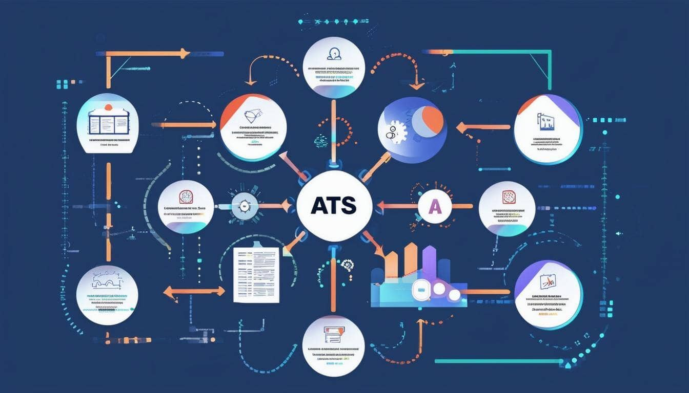

Resume Support
Craft a Resume that Tells Your Story
Your resume is often your first impression—an opportunity to highlight your unique strengths, skills, and experiences to potential employers. Whether you're starting from scratch or looking to polish an existing resume, these resources are here to help you every step of the way.
UMSI students are in high demand, and a clear, well-organized resume will help you stand out among applicants. On this page, you'll find practical tips, templates, and guides—all tailored to the needs of School of Information students and aligned with employer expectations.
Need feedback? You can always meet with a CDO Career Coach to review your materials.
Resume Writing Made Easy: Steps to Success
- Download a UMSI-Approved Template: Start with a format that works—no need to design from scratch.
- Gather Your Experiences: List jobs, internships, volunteer roles, coursework, and projects most relevant to your goals.
- Write Impactful Bullets: Use action verbs and highlight your skills, results, and unique contributions.
- Tailor for Each Opportunity: Customize your resume for every job or internship you pursue.
- Review and Edit: Proofread for errors, check formatting, and ask for feedback from peers or a career coach.
Resume Resources
-
UMSI Resume Guide and Rubric
Comprehensive UMSI guide including tips, formatting rules, and sample accomplishments. -
Writing Strong Resume Bullets
Learn how to describe your work and impact in ways employers notice. -
Resume Rubric
Evaluate your resume using the same criteria as UMSI's Career Development Office. -
Application Materials: Workshops and More
Attend a Resume Refresh workshop, review video tutorials, or access additional templates.
Ready for review? Book a resume review appointment with a CDO Career Coach.
Resume FAQ
-
How long should my resume be?
For most UMSI students and new grads, one page is best. More experienced professionals may require two pages. -
Do I need a different resume for each application?
It's wise to tailor your resume to the requirements and keywords of each opportunity. -
Is it okay to include coursework or student projects?
Absolutely! UMSI coursework and projects are valued by employers, especially if they show relevant skills and impact. -
How often should I update my resume?
Update your resume every semester, after major projects, or whenever you gain a new role or responsibility.
Formatting & ATS Tips
Follow these formatting and Applicant Tracking System (ATS) friendly tips to ensure your resume is readable by both humans and machines.

- Layout: Use a simple, single-column layout; avoid tables, text boxes, and multiple columns.
- Fonts & Sizes: Stick to standard fonts (Arial, Calibri, Times New Roman). Body text should be 10-12pt; headings 14-16pt.
- File Type: Save and upload as PDF unless a job requests a Word document (.docx).
- Contact Info: Put your name and contact details at the top of the page (don't rely on headers/footers for essential info).
- Section Headings: Use common headings like Experience, Education, Projects, Skills, Certifications.
- ATS-Friendly Content: Include keywords from the job description verbatim and use full phrases rather than abbreviations.
- Dates & Locations: Use a consistent, simple format (e.g., “Jan 2023 - Dec 2024”).
- Avoid: Images, icons, charts, unusual symbols, and essential information in headers/footers—these can be missed by ATS.
- Bullets & Language: Use standard bullets and short, impact-focused statements with metrics when possible.
- Test: Paste your resume into a plain-text editor to check ordering and run an ATS/resume parser if available.